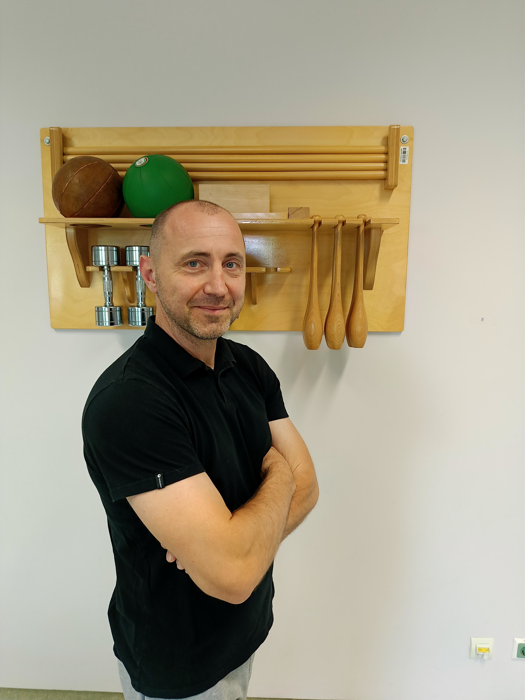

Moje ime je Saša Alagić. Sem ustanovitelj in direktor zasebnega zavoda Postura. Po poklicu sem magister fizioterapije in univerzitetni diplomirani organizator.
Svojo poklicno pot sem začel leta 2004 v Domu starejših občanov Šiška, nato pa jo nadaljeval v Termah Strunjan.
Od leta 2008 sem zaposlen na Nevrološki kliniki Univerzitetnega kliničnega centra v Ljubljani, kjer se ukvarjam tako z rehabilitacijo nevroloških bolnikov, kot tudi z raziskovalnim in pedagoškim delom na področju nevrofizioterapije.
V zadnjih letih sem zelo usmerjen v izobraževanje in raziskovanje težav z držo in njenega vpliva na kvaliteto gibanja.
Več kot 20 let sem se ukvarjal z judom, kar mi danes še kako pomaga pri razumevanju pomena pravilne drže in učinkovitih gibalnih vzorcih pri najzahtevnejših telesnih aktivnostih.
Ker sem ponosen oče dveh športnikov, se zavedam vplivov sodobnega sveta na gibalne navade otrok in mladine.